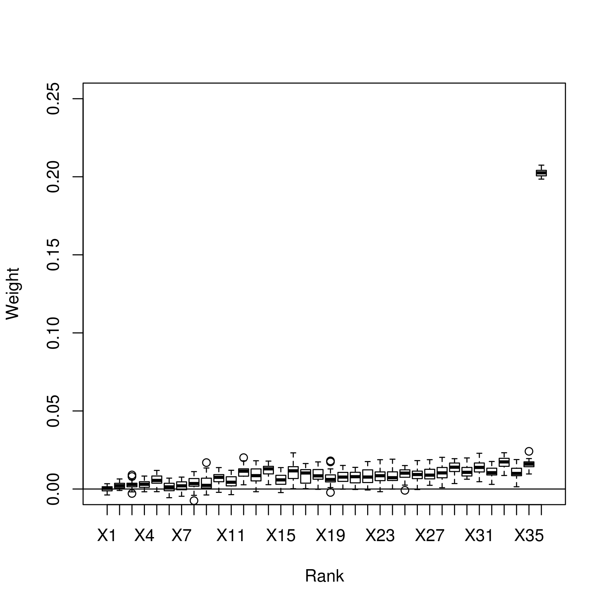
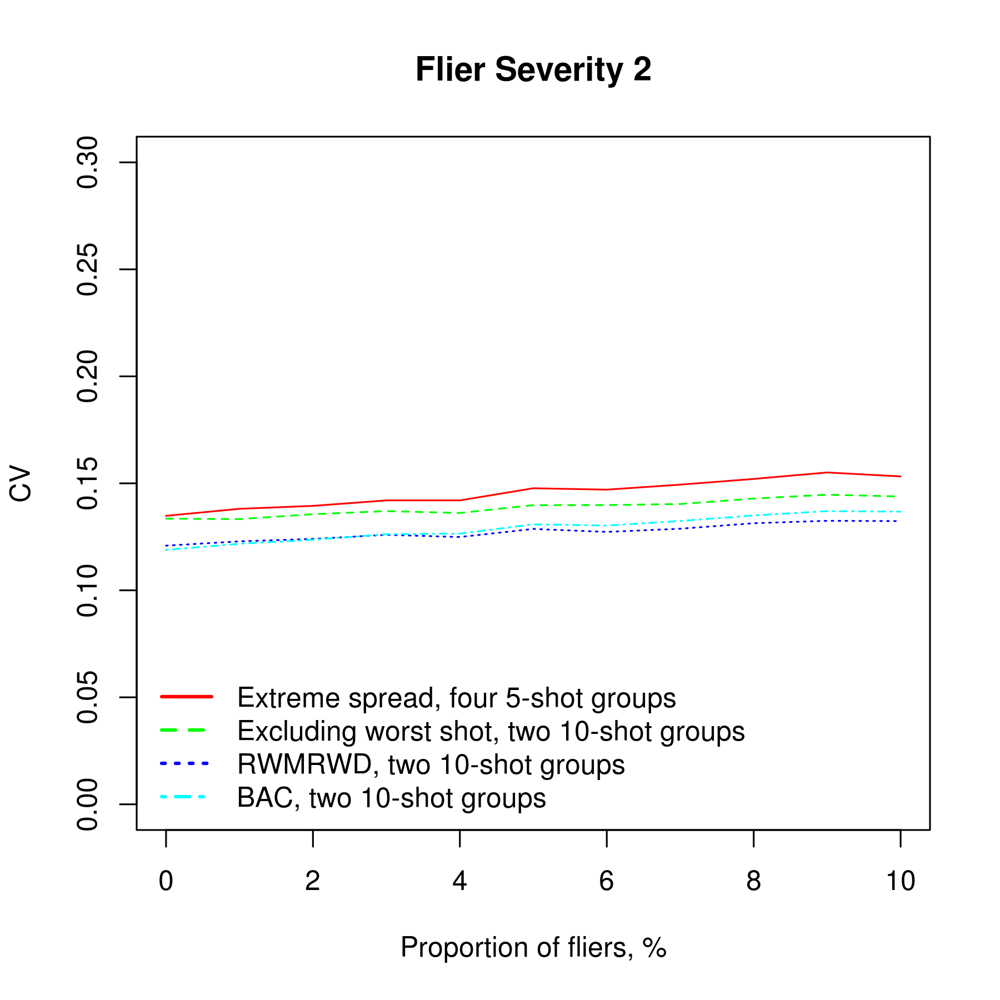
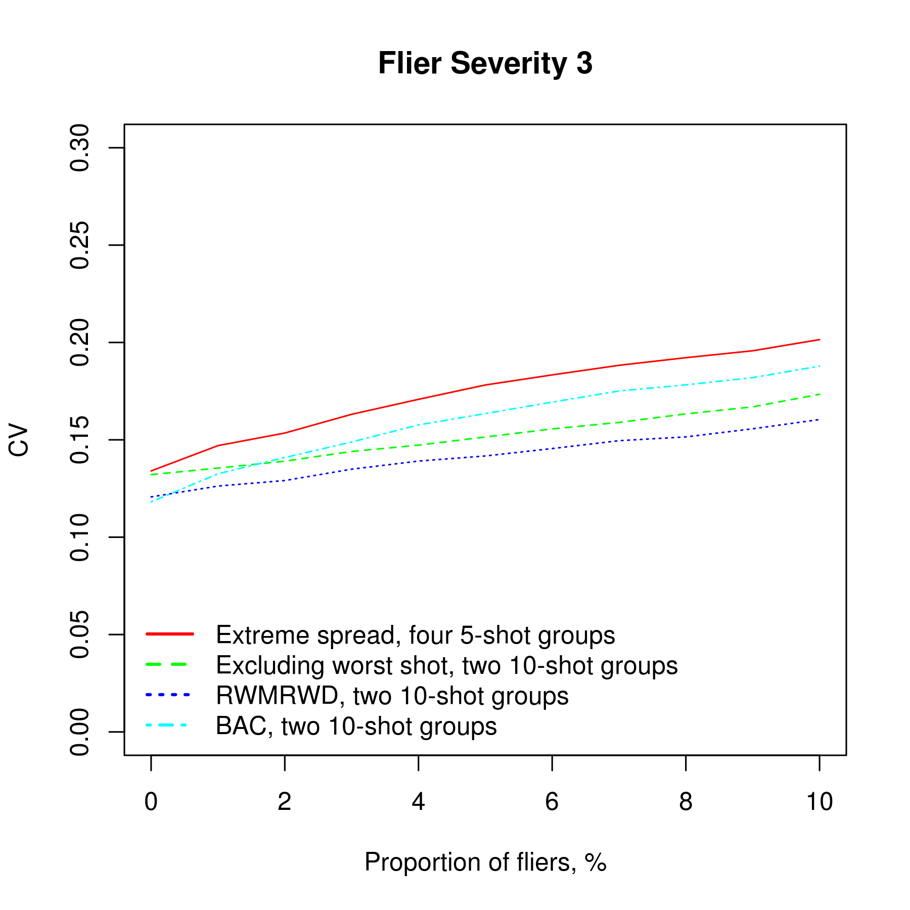
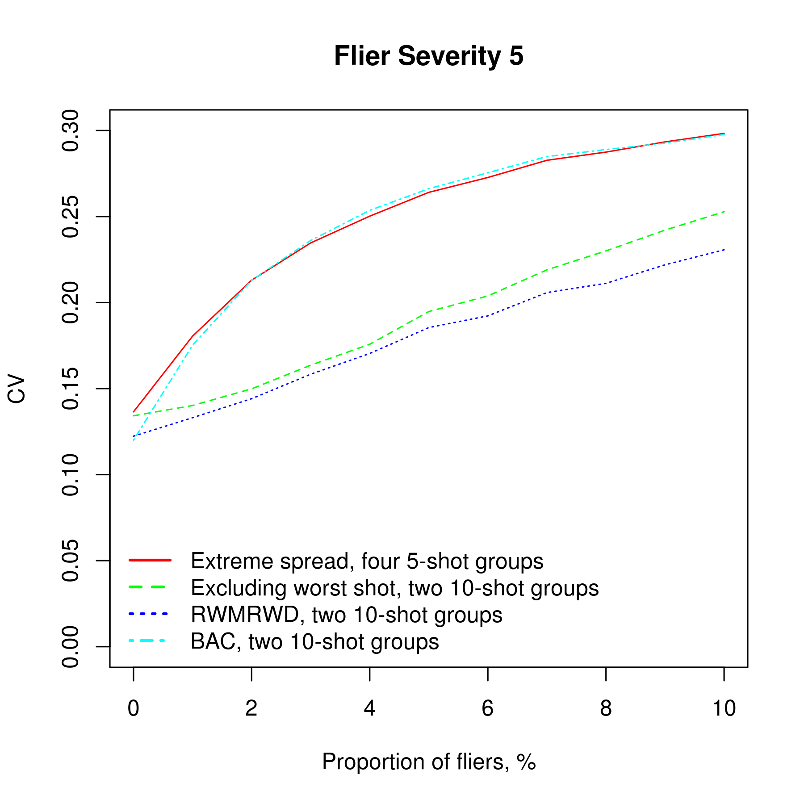

A robust sigma estimator for situations where fliers may pose a concern, efficiency is important, and computer is available to do the calculations.
Relative efficiency compared to BAC on standard bivariate normal distribution is approximately 96%.
BAC relies on finding the center, which is not easy to do in presence of outliers. Median and trimmed mean along x and y axes separately don’t work well for finding the center (efficiency drops considerably), possibly because of lack of central symmetry.
Pairwise distances allow to estimate sigma directly, without finding the center, but raise the question of how to aggregate them. Two common approaches to get robust estimates are trimmed mean and winsorized mean. Distances have natural floor of zero, so it is enough to trim or winsorize from the right. One shot in a 10 shot group can affect at most 9 pairwise distances, at least that many distances need to be trimmed for an estimator to be robust. Outliers are rare, so there is no reason to cut more.
Not all ranks are equally important. The following Monte-Carlo simuilation allows to get a sense of how the weights should look like:

The coefficients grow more or less linearly with rank, except for the top remaining rank that has a higher coefficent. Right winsorization approximates this structure reasonably well. This allows for an efficient, yet still relatively simple L-estimator.
rwmrwd <- function(h)
{
n <- nrow(h) # Number of shots in group
distances <- n * (n - 1) / 2 # Number of pairwise distances
d <- numeric(); # Vector of distances
p <- 1; # Current index within vector d
for (i in 1:(n - 1)) {
for (j in (i + 1):n) {
d[p] <- sqrt((h$x[i] - h$x[j]) ^ 2 + (h$y[i] - h$y[j]) ^ 2)
p <- p + 1
}
}
d <- sort(d)
d[(distances - n + 2):distances] <- d[distances - n + 1] # Winsorization
w <- seq(from = 1, to = distances) # Weight is rank
sum(d * w) / sum(w) / 2.0358 # Weighted average
}The following graphs show Monte-Carlo simulation results on contaminated normal distribution with various proportion and severity of fliers.
  